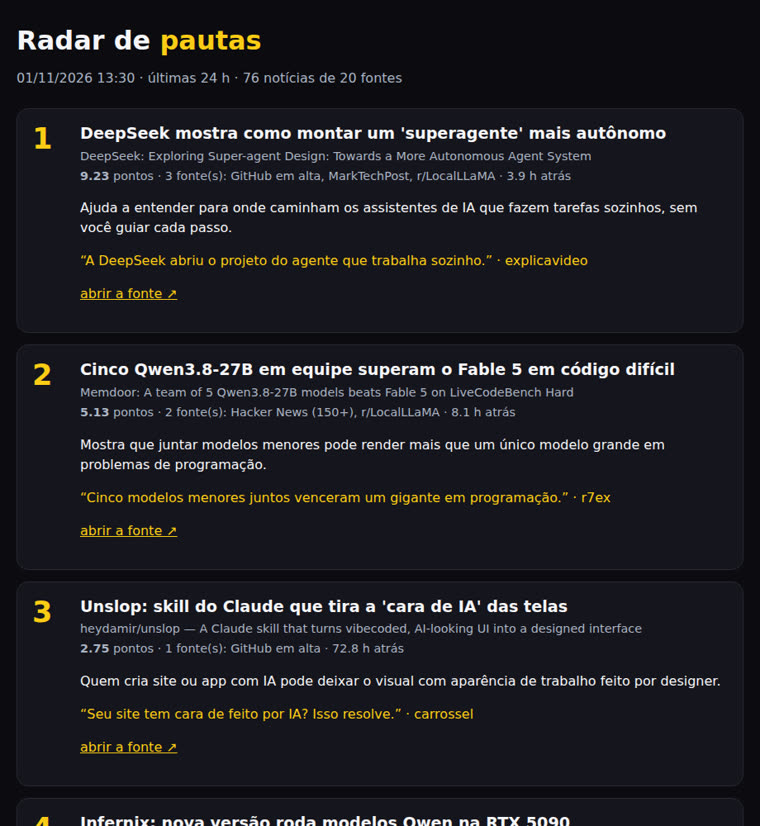

One command reads 20 sources (company blogs, news sites, and forums) plus trending GitHub projects, then shows what’s hot right now. Each story has a working link and, if you ask, a headline and hook in Portuguese.
radar-pautas is a script (a small program you run in a terminal) that reads about 20 AI news sites at once, along with the GitHub projects that gained the most stars that week, and returns the 6 hottest stories from the past 24 hours. It helps people who create content quickly choose what to cover today. It groups the same story from different sites, scores it, checks that the link works, and, if you ask, suggests a headline, hook, and format in Portuguese. You only need Python 3; GitHub CLI and Claude Code are optional.
Instead of opening 20 tabs every morning, run one command to get 6 topics in order. The image sums up the 6 main steps; the next section shows the full process.
When three sites cover the same launch, the radar groups them into one story and gives it more points. Stories that appear in several places rank higher; stories from just one site rank lower.
Before showing a story, it opens its link. If the page doesn’t return “OK” (the internet’s 200 status code), it tries another site covering the same topic. If none of the links work, the story is left out.
With --angulos, Claude Code suggests a Portuguese headline, why it matters, an opening line, and a format for each story. These are suggestions: check every number and fact against the source.
Everything runs on your computer. It only reads public pages (the sites’ RSS feeds, lists of new stories published by each site) and GitHub through the gh program. No API keys are needed.
They’re listed in fontes.json: blogs from OpenAI, Google AI, Google DeepMind, Hugging Face, NVIDIA, Mistral, and GitHub; news sites (The Verge, TechCrunch, Ars Technica, Wired, The Decoder, MarkTechPost, MIT News); Simon Willison, Hacker News (only stories with over 150 points), and Reddit’s r/LocalLLaMA forum. Tecmundo, Canaltech, and Olhar Digital are filtered by AI keywords. The feeds are read at the same time. If a site asks the radar to wait, it waits 8 seconds and tries once more.
If gh is installed and signed in, the radar searches for repositories created in the past 7 days with the terms llm, agent, and ai, sorted by stars. It only uses repositories with at least 300 stars (GitHub’s “likes”). Without gh, this part is skipped and everything else still works.
Each additional site covering a story is worth 3 points; the newest story gets up to 2; an official source (the company that launched it) adds 1.5; mentioning a well-known company or product adds 0.8; a GitHub repository gets up to 1.5 based on its stars. The total is multiplied by the source’s weight, set in fontes.json.
At most 2 stories from the same company and 2 stories from the same single site. That way, the list doesn’t become “6 OpenAI stories.”
Linux or Mac (on Windows, use WSL, the Linux environment that runs inside Windows). Only Python is required.
The radar only uses what comes with Python: there’s nothing to install with pip (Python’s package installer). git downloads the project. Check that both are available:
python3 --version && git --version
gh is GitHub’s terminal program. It finds trending repositories. Install it (Ubuntu: sudo apt install gh; Mac: brew install gh) and sign in once:
gh auth loginOnly needed for --angulos. The radar runs claude -p through your subscription and removes ANTHROPIC_API_KEY from the environment before calling it, so you’re never charged through the API. Install it from claude.com/claude-code.
claude --versionCopy and run these commands in order.
This copies the radar to ~/projetos/radar-pautas (the ~ is your personal folder) and opens that folder.
git clone https://github.com/inematds/radar-pautas ~/projetos/radar-pautas cd ~/projetos/radar-pautas
--dry runs the whole process (usually in under a minute) and only shows the results on screen. Each story has its score in brackets, its sources, how many hours ago it appeared, the link status code (200 = opened), and the address. At the end, you’ll see how many stories it read and which sites were down during that run.
python3 radar.py --dry
# the format of each story on screen:
1. [9.23] DeepSeek: Exploring Super-agent Design: Towards a More Autonomous Agent System
3 fonte(s): GitHub em alta, MarkTechPost, r/LocalLLaMA · 3.9 h · 200 https://www.reddit.com/r/LocalLLaMA/...
Without --dry, the radar saves the files. With --angulos, each story gets a headline, why it matters, a hook (the opening line of a short video), a suggested format, and a word viewers can request in the comments. INEMA uses these formats: r7ex (short vertical reel), explicavideo (explainer video), and carrossel (multi-image post). Without Claude Code, the radar shows aviso: ângulos não gerados and saves the stories without an angle. If the stories have no Portuguese headlines, open Claude Code once (with the claude command) to sign in, then run it again.
python3 radar.py --angulos
If fewer than 3 stories come up (the network is down or it’s a quiet news day), the command ends with an error. Try again later or expand the time window with --horas 48.
The files are saved in a folder named with today’s date: radar.html (to open in a browser), pautas.md (text), and pautas.json (for another program to read). To save them somewhere else, put RADAR_SAIDA=/outra/pasta before the command.
ls ~/projetos/output/radar-pautas/ xdg-open ~/projetos/output/radar-pautas/$(date +%F)/radar.html # on Mac: open
You can combine these options.
| Option | What it does |
|---|---|
--horas 48 | time window in hours (default: 24) |
--n 8 | number of stories (default: 6) |
--angulos | headline, why it matters, hook, format, and word, suggested by Claude Code |
--sem-github | skip trending repositories |
--dry | show results on screen only; don’t save them |
python3 radar.py --horas 48 --n 8
Open fontes.json in a text editor. Each site is one line inside the "ia" list. tipo can be oficial, imprensa, or comunidade; peso multiplies the score. Before adding a site, open its feed address in a browser and check that it shows a list of stories. After editing, the first command below checks that the file is still valid (one extra comma breaks everything), and the second runs a test.
python3 -m json.tool fontes.json > /dev/null && echo ok python3 radar.py --dry
{"nome": "The Verge", "url": "https://www.theverge.com/rss/ai-artificial-intelligence/index.xml", "tipo": "imprensa", "peso": 1.0, "lingua": "en"}
The radar checks the last 200 lines of a production log for a line that mentions the same company and at least 2 words from the title. If it finds one, the story gets the notice “We’ve covered something like this.” The path is set in the code as ~/projetos/wifi/PRODUCOES-VIDEO.md, INEMA’s file. If it isn’t on your computer, the notice simply won’t appear. To use your own file, change the path on the line that starts with PRODUCOES = in radar.py, and add one line per published video. Only words with 6 or more letters count, and generic words (agent, model, skill, claude, openai, google, release) are ignored. So include the company name and the key words from the original news title (usually in English), as in the example. This triggers the notice for story 1 in the example below.
# example line in the production log
04/11 · DeepSeek super-agent design autonomous · explicavideo publicado
grep -n "^PRODUCOES =" radar.py
A skill is an instruction file that Claude Code loads automatically when you ask for something related. The project includes one, SKILL.md. Once it’s set up, just ask for the stories in the conversation. Claude runs the radar, shows the 6 stories, and asks which ones should become videos; nothing is made until you choose. Close and reopen Claude Code after running the command.
mkdir -p ~/.claude/skills ln -s ~/projetos/radar-pautas ~/.claude/skills/radar-pautas
what are today’s stories to cover?
The systemd/ folder contains a ready-to-use schedule (a systemd timer, Linux’s task scheduler) that runs radar.py --angulos every day at 07:30. It’s turned off by default: it only works after you copy and enable it. It expects the project to be in ~/projetos/radar-pautas. These commands copy the schedule, ask systemd to reread the files (daemon-reload), enable the timer immediately (enable --now), and show when the next run will happen.
mkdir -p ~/.config/systemd/user cp systemd/radar-pautas.* ~/.config/systemd/user/ systemctl --user daemon-reload systemctl --user enable --now radar-pautas.timer systemctl --user list-timers radar-pautas.timer
A user timer only runs while you’re signed in. To let it run while the computer is on and nobody is signed in, enable this once: loginctl enable-linger $USER. To turn it off: systemctl --user disable --now radar-pautas.timer.
Run on 01/11/2026 at 13:30 with --angulos: 76 stories from 20 sources in the past 24 hours; Google DeepMind was down that day.

radar.html: Portuguese headline, original title, score, sources, why it matters, hook and format, and verified link.# excerpt from pautas.md
## 1. DeepSeek shows how to build a more autonomous “super-agent”
- Score 9.23 · sources (3): Trending on GitHub,
MarkTechPost, r/LocalLLaMA · 3.9 h ago
- Link (200): https://www.reddit.com/r/
LocalLLaMA/comments/1xl1zn3/...
- Other sources: marktechpost.com/... ·
github.com/deepseek-ai/dsh-superagent-prototype
- Why it matters: Helps us understand where
AI assistants that work on their own are headed,
without you guiding every step.
- Hook: DeepSeek has opened up its project for
an agent that works on its own.
- Format: explicavideo · word: super-agent
Story 1 grouped three different sources (a forum, a news site, and a GitHub repository), so it ranked well ahead of story 2, which scored 5.13 points.
Version 1.0, dated 01/11/2026.